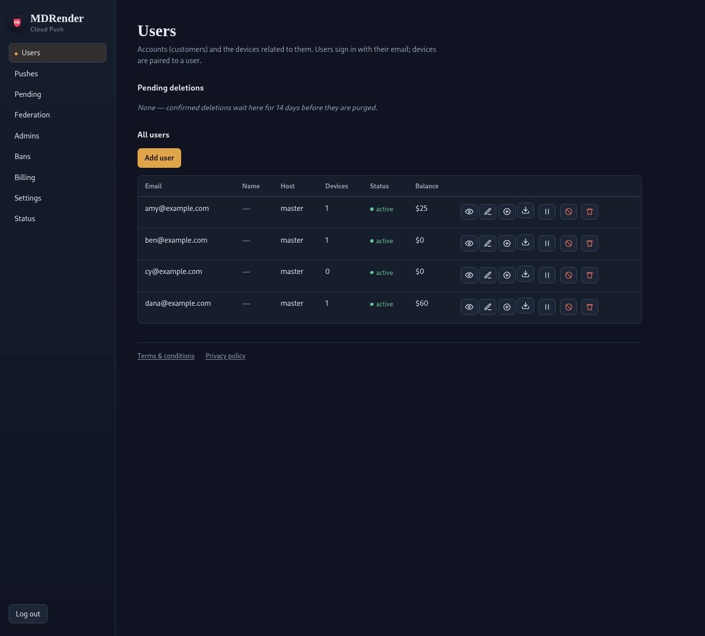
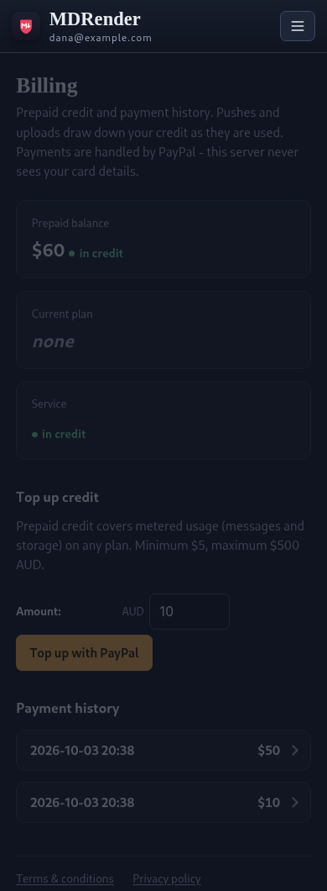
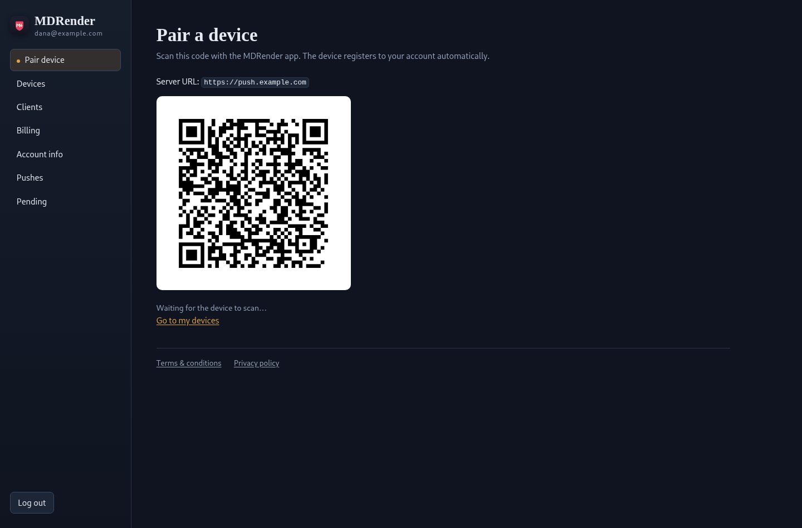
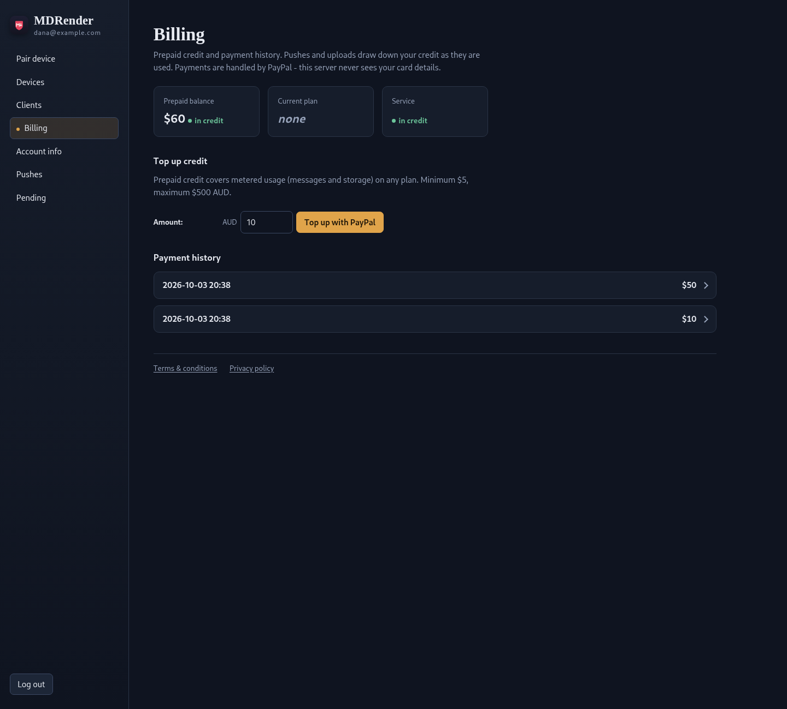
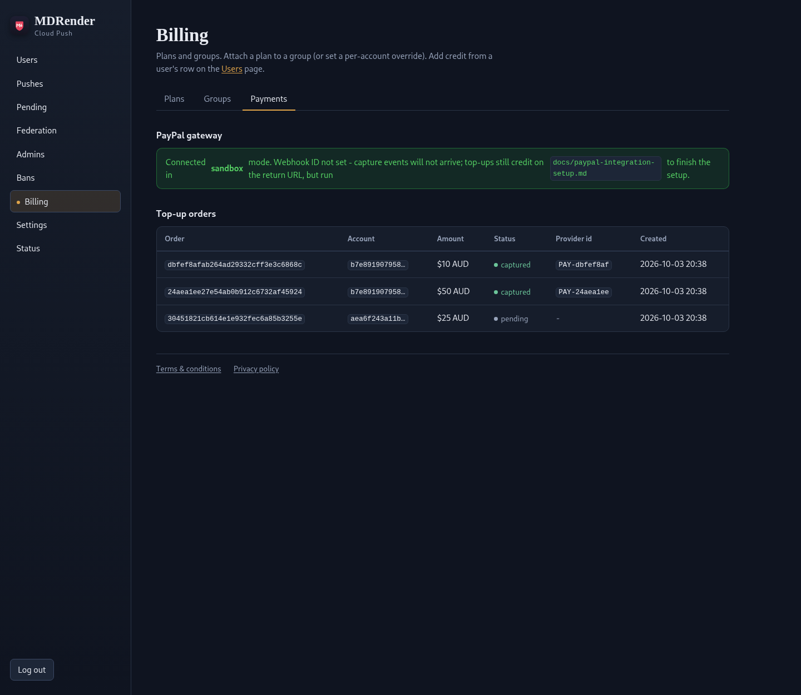
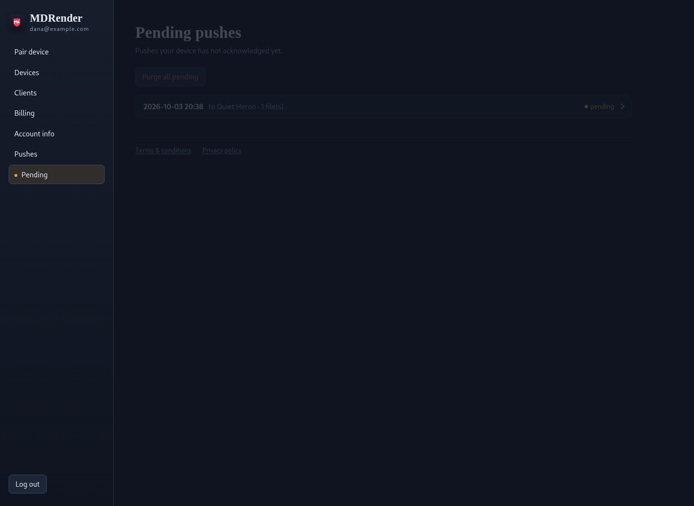

Run your own federated server.
Your devices. Your clients. Your pending downloads. One Docker container holds the accounts, the QR pairing, and the files waiting to be delivered — sealed to your phones when encryption is on, so even the box you host can't read them. The app pairs with the cloud push master; your box registers with it too, so pushes reach your phone from anywhere without handing your traffic to anyone else.


Start it in one command
The image is published to GitHub's container registry on every release —
ghcr.io/githuba42r/mdrender-server. All state lives in one volume
(/data/push): the SQLite database, the server keypair, and the
encrypted files waiting for delivery. Back that volume up and you have
everything. A box like this runs as a federated slave: it
holds your accounts and pending files, and registers with the cloud push
master, which delivers the wake-ups.
The registry serves public pulls anonymously for public
repositories; for a private one, docker login ghcr.io with a
token that has read:packages.
docker run -d --name mdrender-push \
-p 8080:8080 \
-v mdrender-data:/data/push \
-e SERVER_PASSWORD='choose-a-password' \
-e PUSH_PUBLIC_URL='https://push.example.com' \
-e ENCRYPTION_MODE=on \
ghcr.io/githuba42r/mdrender-server:latestThe settings that matter
SERVER_PASSWORD- The password for the browser console. Sign-ins are rate-limited and lock out after repeated failures.
PUSH_PUBLIC_URL- The public URL clients and phones reach you at — also what a federated master probes to verify a slave.
ENCRYPTION_MODE=on- Requires clients to seal every file to the receiving device before upload; the server then stores ciphertext it cannot read. The file name, folder, and type travel inside the sealed envelope, so the operator sees an opaque blob and nothing else — not even the file names.
FCM_SERVER_KEY- Path to a Firebase service-account JSON for wake-up notifications. This is the cloud push master's credential — the master sends every doorbell, for its own accounts and for registered federated servers. Without it your box runs as a federated slave: a store-and-hold relay whose pushes wait on the download endpoints for the app to collect until it registers with the master.
PAYPAL_CLIENT_ID/PAYPAL_CLIENT_SECRET- Activates prepaid top-ups for accounts and paid server plans. One-time orders through PayPal — no subscriptions, no card data on your box.
DELETION_GRACE_DAYS- How long a confirmed account deletion waits before the worker purges it (14 days by default) — long enough to change your mind.
The console you get


Federation: servers that trust each other, one handshake at a time
The app is built around the cloud push master: when you pair your phone, it registers with the master that sends the notifications, and a self-hosted box cannot substitute its own FCM project in its place. That is why a second instance of the same image runs as a slave: it hosts its own accounts and devices, then registers with the master so its doorbells are relayed to phones it cannot reach itself. And registration is deliberately tiny: the master only ever sees a sealed wake-up ping — opaque device ids and nothing else. No file contents, names, folders, or types ever leave your box.
- Ask. The slave signs a connect request with its federation key and sends its operator to the master's consent page.
- Approve. The master's operator reviews the server, the plan, and the terms, then issues a single-use code. Declining stops the flow there.
- Enrol. The code exchanges over an authenticated endpoint and the master lists the slave as active — revocable at any time, and nothing ever enrols without that approval.
Each approval covers the exact server, address, and public key that were consented to; if any of them change, the operators connect again.
A server that has not yet registered with the master stays usable as a store-and-hold relay — pushes wait on the server for the app to collect — but nothing wakes the phone until it enrols with the master.

Prepaid credit, not subscriptions
If you host for others, the server takes PayPal top-ups as one-time orders — no recurring charges, and your box never sees card details. Credit covers metered usage: messages sent and storage held draw the balance down as they are used.
- Top up. Choose an amount between $5 and $500 and pay through PayPal; the webhook credits the account when the capture lands.
- Use. Pushes and uploads draw down the balance against the account's plan, with per-account exemptions for your own devices.
- Gate. Plans can require credit, so an account at zero stops at the door while everything already stored stays readable.
Watch it from Billing → Payments: gateway state, webhook health, and every top-up order with its provider reference.

Keep the middle of the internet out of it
A push server only has to do three things: remember your devices, hold what's waiting, and wake the phone. Run those three things on your own host and the pending downloads sit on your disk and the encryption keys stay on the devices. The master registers one narrow role: hand it a wake-up ping and it rings your phone — no files, names, folders, or types ever leave your box. Use the master itself for pushes instead, and with encryption mode on even its operator sees only sealed ciphertext — no file contents, names, folders, or types.
